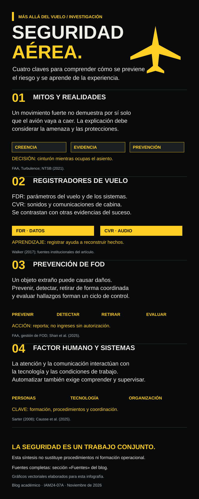

Una vista del sistema
Cuatro perspectivas
en una imagen.
Infografía vertical de 800 × 2000 píxeles. Síntesis y referencias de los cuatro subtemas.
Descargar infografía SVG

Gráficos vectoriales elaborados para esta infografía. Fuentes del contenido identificadas en cada bloque; referencias completas en la bibliografía.